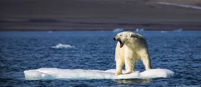
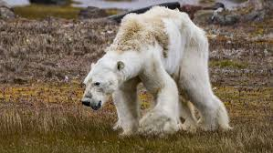

La biodiversidad o diversidad biológica es la variedad de la vida. Este reciente concepto incluye varios niveles de la organización
biológica. Abarca a la diversidad de especies de plantas, animales, hongos y microorganismos que viven en un espacio determinado,
a su variabilidad genética, a los ecosistemas de los cuales forman parte estas especies y a los paisajes o regiones en donde se
ubican los ecosistemas. También incluye los procesos ecológicos y evolutivos que se dan a nivel de genes, especies, ecosistemas y
paisajes.
 
El oso polar (Ursus maritimus) es un mamífero marino que depende enormemente del hielo, principalmente para
alimentarse y así cubrir sus necesidades energéticas. Su gran tamaño, que en edad adulta puede llegar a superar los 2,5 metros con un
peso de casi 700 kilos, sirve para albergar una gruesa capa de grasa que protege del frío y sirve como reserva en sus travesías para
obtener alimento.
Este sustento es, en gran medida, la foca marina, animal con el que comparten hábitat. En las zonas de hielo que se desplazan por el océano,
el oso polar acecha y da caza a las poblaciones de focas que salen a respirar, obteniendo así una gran fuente de energía. Sin embargo,
en ocasiones también toman un papel carroñero, pudiendo consumir cadáveres de ballena.
Debido al deterioro de su hábitat, la temporada de caza es cada vez más corta y difícil, y se calcula que por cada semana de hielo que se pierde en los inviernos
del Ártico, los osos polares pierden alrededor 7 kg de grasa.
Lemures
Un grito de ayuda
Solo queda el 10% de los bosques históricos de Madagascar, los cuales sustentan a estos lémures en peligro crítico. Con una gran pasión por el néctar, se cree que los lémures son los polinizadores más grandes del mundo. A diferencia de la mayoría de los primates, dan a luz a grandes camadas, por lo que prosperan en cautiverio, donde las tasas de supervivencia son altas. Pero debido a que han sido criados a partir de un grupo genético muy pequeño, las reintroducciones posteriores entrañan muchas complicaciones. Su conservación se logrará cuando simplemente los dejemos en paz en un dosel de selva virgen.

Huevos de rana arborícora
Nacidos en dificultades
Los huevos de la rana arborícola de ojos amarillos miden alrededor de 3 mm de ancho. Ayer, los embriones no tenían ojos y, mañana, se volverán oscuros, como renacuajos. Si bien la tasa de gestación es precisa, responde a la temperatura, y el cambio climático está haciendo que las ranas eclosionen temprano o tarde, confundiendo a los depredadores y perturbando toda la cadena alimentaria.